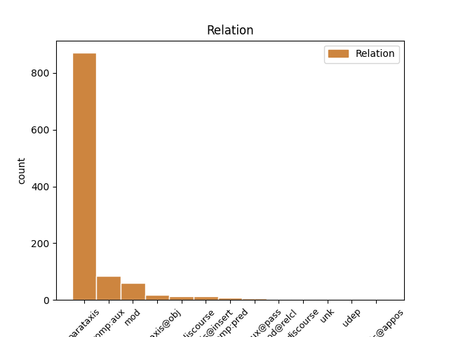
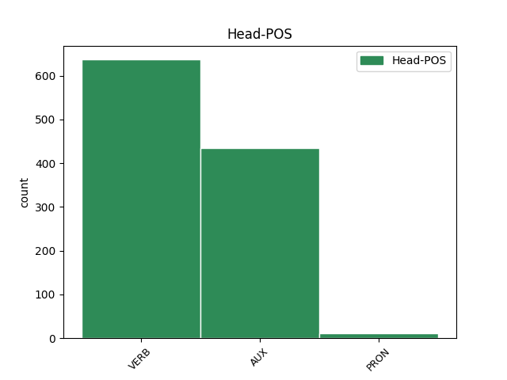
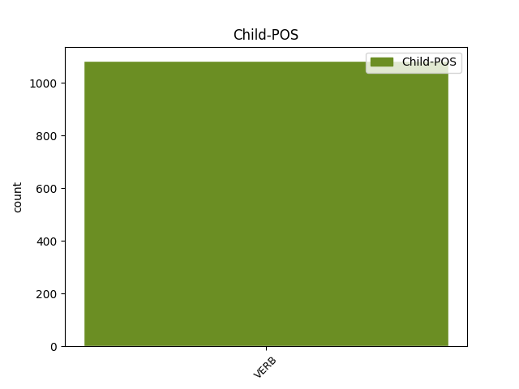

Distribution of features within this leaf



Agreement Rules sorted by frequency.
- When the dependent token is the parataxis(parataxis) of the head token, and the dependent token is VERB.
1 Fabio _ _ _ _ 0 _ _ _
2 Fazio _ _ _ _ 0 _ _ _
3 : _ _ _ _ 0 _ _ _
4 Mi _ _ _ _ 0 _ _ _
5 scusi scusare VERB V Mood=Imp|Number=Sing|Person=3|Tense=Pres|VerbForm=Fin 0 _ _ _
6 , _ _ _ _ 0 _ _ _
7 Presidente _ _ _ _ 0 _ _ _
8 , _ _ _ _ 0 _ _ _
9 ma _ _ _ _ 0 _ _ _
10 non _ _ _ _ 0 _ _ _
11 ho _ _ _ _ 0 _ _ _
12 capito _ _ _ _ 0 _ _ _
13 la _ _ _ _ 0 _ _ _
14 sua _ _ _ _ 0 _ _ _
15 risposta _ _ _ _ 0 _ _ _
16 . _ _ _ _ 0 _ _ _
17 Mario _ _ _ _ 0 _ _ _
18 Monti _ _ _ _ 0 _ _ _
19 : _ _ _ _ 0 _ _ _
20 E _ _ _ _ 0 _ _ _
21 fa fare VERB V Mood=Ind|Number=Sing|Person=3|Tense=Pres|VerbForm=Fin 5 parataxis _ _
22 bene _ _ _ _ 0 _ _ _
23 a _ _ _ _ 0 _ _ _
24 non _ _ _ _ 0 _ _ _
25 aver _ _ _ _ 0 _ _ _
26 capito _ _ _ _ 0 _ _ _
27 . _ _ _ _ 0 _ _ _
1 Non _ _ _ _ 0 _ _ _
2 li _ _ _ _ 0 _ _ _
3 posso potere AUX VM Mood=Ind|Number=Sing|Person=1|Tense=Pres|VerbForm=Fin 0 _ _ _
4 vedere _ _ _ _ 0 _ _ _
5 i _ _ _ _ 0 _ _ _
6 video _ _ _ _ 0 _ _ _
7 sto stare VERB V Mood=Ind|Number=Sing|Person=1|Tense=Pres|VerbForm=Fin 3 mod _ _
8 da _ _ _ _ 0 _ _ _
9 il _ _ _ _ 0 _ _ _
10 telefono _ _ _ _ 0 _ _ _
11 :-( _ _ _ _ 0 _ _ _
12 ... _ _ _ _ 0 _ _ _
13 ma _ _ _ _ 0 _ _ _
14 sei _ _ _ _ 0 _ _ _
15 la _ _ _ _ 0 _ _ _
16 piu _ _ _ _ 0 _ _ _
17 bella _ _ _ _ 0 _ _ _
18 so _ _ _ _ 0 _ _ _
19 sempre _ _ _ _ 0 _ _ _
20 io _ _ _ _ 0 _ _ _
21 — _ _ _ _ 0 _ _ _
22 tell _ _ _ _ 0 _ _ _
23 me _ _ _ _ 0 _ _ _
24 why _ _ _ _ 0 _ _ _
25 . _ _ _ _ 0 _ _ _
26 http://t.co/cTfFTMEPuj _ _ _ _ 0 _ _ _
1 no _ _ _ _ 0 _ _ _
2 ho avere AUX VA Mood=Ind|Number=Sing|Person=1|Tense=Pres|VerbForm=Fin 0 _ _ _
3 capito capitare VERB V Mood=Ind|Number=Sing|Person=1|Tense=Pres|VerbForm=Fin 2 comp:aux _ SpaceAfter=No
4 . _ _ _ _ 0 _ _ _
5 il _ _ _ _ 0 _ _ _
6 movimento _ _ _ _ 0 _ _ _
7 5 _ _ _ _ 0 _ _ _
8 stelle _ _ _ _ 0 _ _ _
9 è _ _ _ _ 0 _ _ _
10 favorevole _ _ _ _ 0 _ _ _
11 o _ _ _ _ 0 _ _ _
12 contrario _ _ _ _ 0 _ _ _
13 a _ _ _ _ 0 _ _ _
14 la _ _ _ _ 0 _ _ _
15 cittadinanza _ _ _ _ 0 _ _ _
16 per _ _ _ _ 0 _ _ _
17 i _ _ _ _ 0 _ _ _
18 figli _ _ _ _ 0 _ _ _
19 di _ _ _ _ 0 _ _ _
20 gli _ _ _ _ 0 _ _ _
21 immigrati _ _ _ _ 0 _ _ _
22 ? _ _ _ _ 0 _ _ _
23 #Grillo _ _ _ _ 0 _ _ _
24 #M5S _ _ _ _ 0 _ _ _
1 Penso _ _ _ _ 0 _ _ _
2 che _ _ _ _ 0 _ _ _
3 babbo _ _ _ _ 0 _ _ _
4 natale _ _ _ _ 0 _ _ _
5 sia essere AUX VA Mood=Sub|Number=Sing|Person=3|Tense=Pres|VerbForm=Fin 0 _ _ _
6 un _ _ _ _ 0 _ _ _
7 po _ _ _ _ 0 _ _ _
8 invecchiato _ _ _ _ 0 _ _ _
9 .. _ _ _ _ 0 _ _ _
10 non _ _ _ _ 0 _ _ _
11 sente sentire VERB V Mood=Ind|Number=Sing|Person=3|Tense=Pres|VerbForm=Fin 5 parataxis@insert _ _
12 più _ _ _ _ 0 _ _ _
13 tanto _ _ _ _ 0 _ _ _
14 bene _ _ _ _ 0 _ _ _
15 , _ _ _ _ 0 _ _ _
16 gli _ _ _ _ 0 _ _ _
17 avevo _ _ _ _ 0 _ _ _
18 chiesto _ _ _ _ 0 _ _ _
19 mari _ _ _ _ 0 _ _ _
20 e _ _ _ _ 0 _ _ _
21 monti _ _ _ _ 0 _ _ _
22 ed _ _ _ _ 0 _ _ _
23 invece _ _ _ _ 0 _ _ _
24 mi _ _ _ _ 0 _ _ _
25 ha _ _ _ _ 0 _ _ _
26 portato _ _ _ _ 0 _ _ _
27 Mario _ _ _ _ 0 _ _ _
28 Monti _ _ _ _ 0 _ _ _
29 ! _ _ _ _ 0 _ _ _
1 @user _ _ _ _ 0 _ _ _
2 compiti _ _ _ _ 0 _ _ _
3 compiti _ _ _ _ 0 _ _ _
4 .. _ _ _ _ 0 _ _ _
5 Ma _ _ _ _ 0 _ _ _
6 io _ _ _ _ 0 _ _ _
7 dico dire VERB V Mood=Ind|Number=Sing|Person=1|Tense=Pres|VerbForm=Fin 8 parataxis@discourse _ _
8 vado andare VERB V Mood=Ind|Number=Sing|Person=1|Tense=Pres|VerbForm=Fin 0 _ _ _
9 a _ _ _ _ 0 _ _ _
10 scuola _ _ _ _ 0 _ _ _
11 e _ _ _ _ 0 _ _ _
12 non _ _ _ _ 0 _ _ _
13 si _ _ _ _ 0 _ _ _
14 fa _ _ _ _ 0 _ _ _
15 un _ _ _ _ 0 _ _ _
16 tubo _ _ _ _ 0 _ _ _
17 , _ _ _ _ 0 _ _ _
18 sto _ _ _ _ 0 _ _ _
19 a _ _ _ _ 0 _ _ _
20 casa _ _ _ _ 0 _ _ _
21 malata _ _ _ _ 0 _ _ _
22 una _ _ _ _ 0 _ _ _
23 sett _ _ _ _ 0 _ _ _
24 e _ _ _ _ 0 _ _ _
25 danno _ _ _ _ 0 _ _ _
26 tutte _ _ _ _ 0 _ _ _
27 le _ _ _ _ 0 _ _ _
28 verifiche _ _ _ _ 0 _ _ _
29 😡 _ _ _ _ 0 _ _ _
1 Tg3 _ _ _ _ 0 _ _ _
2 video _ _ _ _ 0 _ _ _
3 Mario _ _ _ _ 0 _ _ _
4 Monti _ _ _ _ 0 _ _ _
5 da _ _ _ _ 0 _ _ _
6 Berlino _ _ _ _ 0 _ _ _
7 parla parlare VERB V Mood=Ind|Number=Sing|Person=3|Tense=Pres|VerbForm=Fin 0 _ _ _
8 di _ _ _ _ 0 _ _ _
9 l' _ _ _ _ 0 _ _ _
10 Italia _ _ _ _ 0 _ _ _
11 : _ _ _ _ 0 _ _ _
12 c' _ _ _ _ 0 _ _ _
13 è essere VERB V Mood=Ind|Number=Sing|Person=3|Tense=Pres|VerbForm=Fin 7 parataxis@obj _ _
14 un _ _ _ _ 0 _ _ _
15 enorme _ _ _ _ 0 _ _ _
16 lavoro _ _ _ _ 0 _ _ _
17 da _ _ _ _ 0 _ _ _
18 fare _ _ _ _ 0 _ _ _
19 . _ _ _ _ 0 _ _ _
20 A _ _ _ _ 0 _ _ _
21 cominciare _ _ _ _ 0 _ _ _
22 da _ _ _ _ 0 _ _ _
23 la _ _ _ _ 0 _ _ _
24 rimozione _ _ _ _ 0 _ _ _
25 ... _ _ _ _ 0 _ _ _
26 http://t.co/VXaxdKAp _ _ _ _ 0 _ _ _
1 Cosa _ _ _ _ 0 _ _ _
2 ridi _ _ _ _ 0 _ _ _
3 te _ _ _ _ 0 _ _ _
4 ?? _ _ _ _ 0 _ _ _
5 E _ _ _ _ 0 _ _ _
6 io io PRON PE Number=Sing|Person=1|PronType=Prs 0 _ _ _
7 che _ _ _ _ 0 _ _ _
8 cerco cercare VERB V Mood=Ind|Number=Sing|Person=1|Tense=Pres|VerbForm=Fin 6 mod@relcl _ _
9 di _ _ _ _ 0 _ _ _
10 aiutar _ _ _ _ 0 _ _ _
11 ti _ _ _ _ 0 _ _ _
12 anche _ _ _ _ 0 _ _ _
13 * _ _ _ _ 0 _ _ _
14 sbuffa _ _ _ _ 0 _ _ _
15 * _ _ _ _ 0 _ _ _
1 @user _ _ _ _ 0 _ _ _
2 però _ _ _ _ 0 _ _ _
3 ancora _ _ _ _ 0 _ _ _
4 non _ _ _ _ 0 _ _ _
5 vi _ _ _ _ 0 _ _ _
6 siete _ _ _ _ 0 _ _ _
7 tolti _ _ _ _ 0 _ _ _
8 niente _ _ _ _ 0 _ _ _
9 vero _ _ _ _ 0 _ _ _
10 ? _ _ _ _ 0 _ _ _
11 Come _ _ _ _ 0 _ _ _
12 mai _ _ _ _ 0 _ _ _
13 siete essere AUX V Mood=Ind|Number=Plur|Person=2|Tense=Pres|VerbForm=Fin 0 _ _ _
14 tutti _ _ _ _ 0 _ _ _
15 attaccati attaccare VERB V Mood=Imp|Number=Sing|Person=2|Tense=Pres|VerbForm=Fin 13 comp:pred _ _
16 a _ _ _ _ 0 _ _ _
17 il _ _ _ _ 0 _ _ _
18 dio _ _ _ _ 0 _ _ _
19 danaro _ _ _ _ 0 _ _ _
20 ? _ _ _ _ 0 _ _ _
21 Nessuno _ _ _ _ 0 _ _ _
22 escluso _ _ _ _ 0 _ _ _
23 ? _ _ _ _ 0 _ _ _
24 Gradita _ _ _ _ 0 _ _ _
25 risposta _ _ _ _ 0 _ _ _
1 La _ _ _ _ 0 _ _ _
2 CGIL _ _ _ _ 0 _ _ _
3 deve dovere AUX VM Mood=Ind|Number=Sing|Person=3|Tense=Pres|VerbForm=Fin 0 _ _ _
4 proclamare _ _ _ _ 0 _ _ _
5 lo _ _ _ _ 0 _ _ _
6 sciopero _ _ _ _ 0 _ _ _
7 generale _ _ _ _ 0 _ _ _
8 . _ _ _ _ 0 _ _ _
9 La _ _ _ _ 0 _ _ _
10 manovra _ _ _ _ 0 _ _ _
11 di _ _ _ _ 0 _ _ _
12 il _ _ _ _ 0 _ _ _
13 governo _ _ _ _ 0 _ _ _
14 Monti _ _ _ _ 0 _ _ _
15 è _ _ _ _ 0 _ _ _
16 innacetabile _ _ _ _ 0 _ _ _
17 , _ _ _ _ 0 _ _ _
18 pagano _ _ _ _ 0 _ _ _
19 sempre _ _ _ _ 0 _ _ _
20 i _ _ _ _ 0 _ _ _
21 più _ _ _ _ 0 _ _ _
22 deboli _ _ _ _ 0 _ _ _
23 . _ _ _ _ 0 _ _ _
24 Basta bastare VERB V Mood=Ind|Number=Sing|Person=3|Tense=Pres|VerbForm=Fin 3 discourse _ SpaceAfter=No
25 ! _ _ _ _ 0 _ _ _
26 1 _ _ _ _ 0 _ _ _
1 #FF _ _ _ _ 0 _ _ _
2 @user _ _ _ _ 0 _ _ _
3 : _ _ _ _ 0 _ _ _
4 Oh _ _ _ _ 0 _ _ _
5 che _ _ _ _ 0 _ _ _
6 notizia _ _ _ _ 0 _ _ _
7 , _ _ _ _ 0 _ _ _
8 si _ _ _ _ 0 _ _ _
9 va andare VERB V Mood=Ind|Number=Sing|Person=3|Tense=Pres|VerbForm=Fin 0 _ _ _
10 verso _ _ _ _ 0 _ _ _
11 un _ _ _ _ 0 _ _ _
12 governo _ _ _ _ 0 _ _ _
13 Monti _ _ _ _ 0 _ _ _
14 e _ _ _ _ 0 _ _ _
15 lo _ _ _ _ 0 _ _ _
16 spread _ _ _ _ 0 _ _ _
17 diminuisce _ _ _ _ 0 _ _ _
18 . _ _ _ _ 0 _ _ _
19 Che _ _ _ _ 0 _ _ _
20 sorpresa _ _ _ _ 0 _ _ _
21 ! _ _ _ _ 0 _ _ _
22 E essere VERB V Mood=Ind|Number=Sing|Person=3|Tense=Pres|VerbForm=Fin 9 parataxis@appos _ _
23 proprio _ _ _ _ 0 _ _ _
24 una _ _ _ _ 0 _ _ _
25 cosa _ _ _ _ 0 _ _ _
26 di _ _ _ _ 0 _ _ _
27 cui _ _ _ _ 0 _ _ _
28 gioire _ _ _ _ 0 _ _ _
29 ! _ _ _ _ 0 _ _ _
Disagree Examples:
1 #Grillo _ _ _ _ 0 _ _ _
2 a _ _ _ _ 0 _ _ _
3 #saonara _ _ _ _ 0 _ _ _
4 C' _ _ _ _ 0 _ _ _
5 è essere VERB V Mood=Ind|Number=Sing|Person=3|Tense=Pres|VerbForm=Fin 0 _ _ _
6 gente _ _ _ _ 0 _ _ _
7 ! _ _ _ _ 0 _ _ _
8 robe _ _ _ _ 0 _ _ _
9 da _ _ _ _ 0 _ _ _
10 comizio _ _ _ _ 0 _ _ _
11 di _ _ _ _ 0 _ _ _
12 altri _ _ _ _ 0 _ _ _
13 tempi _ _ _ _ 0 _ _ _
14 . _ _ _ _ 0 _ _ _
15 Bene _ _ _ _ 0 _ _ _
16 . _ _ _ _ 0 _ _ _
17 Speriamo sperare VERB V Mood=Imp|Number=Plur|Person=1|Tense=Pres|VerbForm=Fin 5 parataxis _ _
18 che _ _ _ _ 0 _ _ _
19 a _ _ _ _ 0 _ _ _
20 cambiare _ _ _ _ 0 _ _ _
21 sia _ _ _ _ 0 _ _ _
22 soprattutto _ _ _ _ 0 _ _ _
23 la _ _ _ _ 0 _ _ _
24 testa _ _ _ _ 0 _ _ _
25 di _ _ _ _ 0 _ _ _
26 la _ _ _ _ 0 _ _ _
27 gente _ _ _ _ 0 _ _ _
28 #politica _ _ _ _ 0 _ _ _
1 STO stare VERB V Mood=Ind|Number=Sing|Person=1|Tense=Pres|VerbForm=Fin 0 _ _ _
2 MALE _ _ _ _ 0 _ _ _
3 :c _ _ _ _ 0 _ _ _
4 #rt _ _ _ _ 0 _ _ _
5 segui seguire VERB V Mood=Imp|Number=Sing|Person=2|Tense=Pres|VerbForm=Fin 1 parataxis _ _
6 mi _ _ _ _ 0 _ _ _
7 ti _ _ _ _ 0 _ _ _
8 seguo _ _ _ _ 0 _ _ _
9 e _ _ _ _ 0 _ _ _
10 ti _ _ _ _ 0 _ _ _
11 faccio _ _ _ _ 0 _ _ _
12 una _ _ _ _ 0 _ _ _
13 domanda _ _ _ _ 0 _ _ _
14 .. _ _ _ _ 0 _ _ _
15 mi _ _ _ _ 0 _ _ _
16 annoio _ _ _ _ 0 _ _ _
17 :c _ _ _ _ 0 _ _ _
18 #follow _ _ _ _ 0 _ _ _
19 #followme _ _ _ _ 0 _ _ _
20 x9 _ _ _ _ 0 _ _ _
1 STO _ _ _ _ 0 _ _ _
2 MALE _ _ _ _ 0 _ _ _
3 :c _ _ _ _ 0 _ _ _
4 #rt _ _ _ _ 0 _ _ _
5 segui seguire VERB V Mood=Imp|Number=Sing|Person=2|Tense=Pres|VerbForm=Fin 0 _ _ _
6 mi _ _ _ _ 0 _ _ _
7 ti _ _ _ _ 0 _ _ _
8 seguo _ _ _ _ 0 _ _ _
9 e _ _ _ _ 0 _ _ _
10 ti _ _ _ _ 0 _ _ _
11 faccio _ _ _ _ 0 _ _ _
12 una _ _ _ _ 0 _ _ _
13 domanda _ _ _ _ 0 _ _ _
14 .. _ _ _ _ 0 _ _ _
15 mi _ _ _ _ 0 _ _ _
16 annoio annoiare VERB V Mood=Ind|Number=Sing|Person=1|Tense=Pres|VerbForm=Fin 5 parataxis _ _
17 :c _ _ _ _ 0 _ _ _
18 #follow _ _ _ _ 0 _ _ _
19 #followme _ _ _ _ 0 _ _ _
20 x9 _ _ _ _ 0 _ _ _
1 Ho avere AUX VA Mood=Ind|Number=Sing|Person=1|Tense=Pres|VerbForm=Fin 0 _ _ _
2 appena _ _ _ _ 0 _ _ _
3 acquistato _ _ _ _ 0 _ _ _
4 Ballerina _ _ _ _ 0 _ _ _
5 Necklace _ _ _ _ 0 _ _ _
6 su _ _ _ _ 0 _ _ _
7 Stardoll _ _ _ _ 0 _ _ _
8 . _ _ _ _ 0 _ _ _
9 Dai dare VERB V Mood=Imp|Number=Sing|Person=2|Tense=Pres|VerbForm=Fin 1 parataxis _ _
10 un' _ _ _ _ 0 _ _ _
11 occhiata _ _ _ _ 0 _ _ _
12 a _ _ _ _ 0 _ _ _
13 la _ _ _ _ 0 _ _ _
14 mia _ _ _ _ 0 _ _ _
15 Suite _ _ _ _ 0 _ _ _
16 ! _ _ _ _ 0 _ _ _
17 http://t.co/4izCbBod _ _ _ _ 0 _ _ _
1 i _ _ _ _ 0 _ _ _
2 poeti _ _ _ _ 0 _ _ _
3 costruiscono costruire VERB V Mood=Ind|Number=Plur|Person=3|Tense=Pres|VerbForm=Fin 0 _ _ _
4 tweet _ _ _ _ 0 _ _ _
5 su _ _ _ _ 0 _ _ _
6 la _ _ _ _ 0 _ _ _
7 paura _ _ _ _ 0 _ _ _
8 , _ _ _ _ 0 _ _ _
9 paura _ _ _ _ 0 _ _ _
10 da _ _ _ _ 0 _ _ _
11 amare _ _ _ _ 0 _ _ _
12 paura _ _ _ _ 0 _ _ _
13 di _ _ _ _ 0 _ _ _
14 restare _ _ _ _ 0 _ _ _
15 .... _ _ _ _ 0 _ _ _
16 aggiungete aggiungere VERB V Mood=Imp|Number=Plur|Person=2|Tense=Pres|VerbForm=Fin 3 parataxis _ _
17 pure _ _ _ _ 0 _ _ _
18 paura _ _ _ _ 0 _ _ _
19 che _ _ _ _ 0 _ _ _
20 non _ _ _ _ 0 _ _ _
21 ve _ _ _ _ 0 _ _ _
22 la _ _ _ _ 0 _ _ _
23 da _ _ _ _ 0 _ _ _
24 ... _ _ _ _ 0 _ _ _